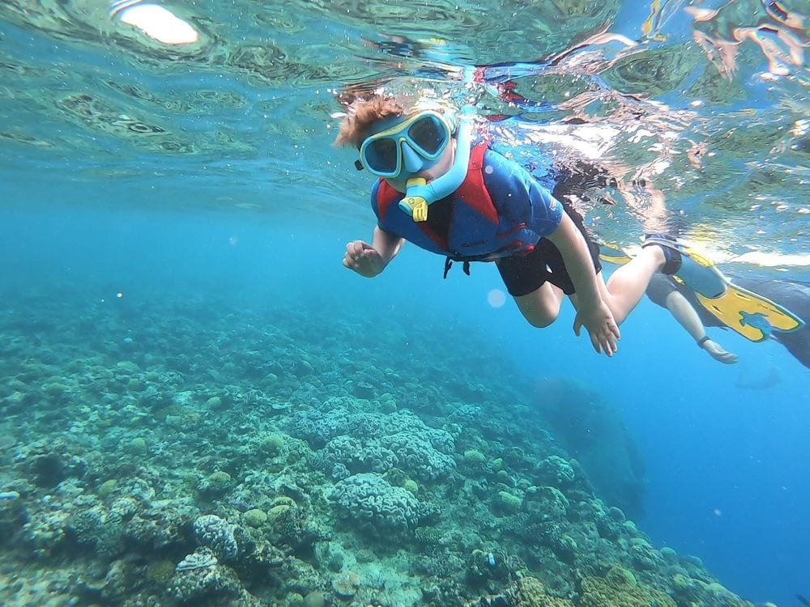
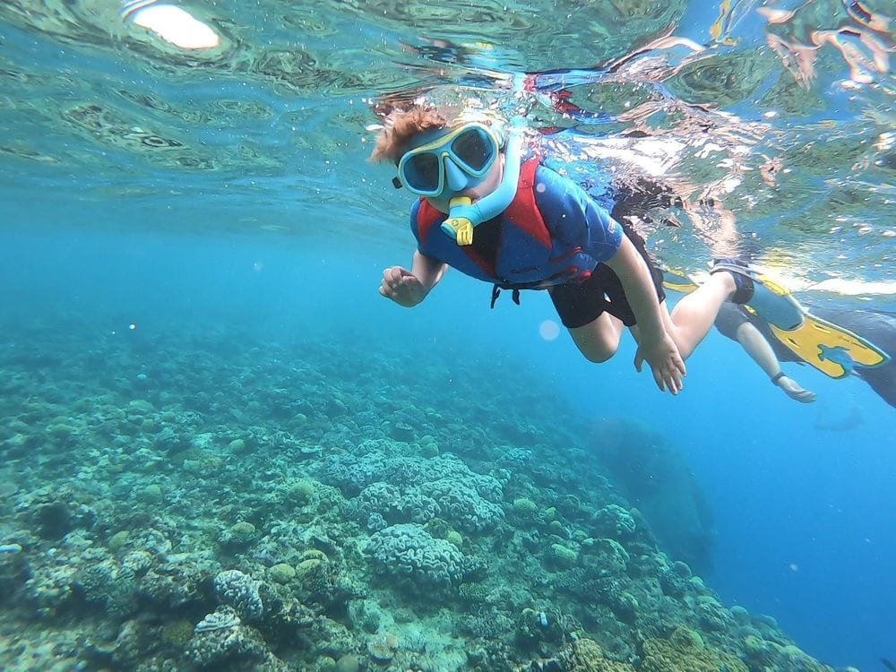

HIKKADUWA
Hikkaduwa sea turtle hatchery and rescue center
.jpg)
.jpg)
.jpg)
.jpg)
about hikkaduwa turtle hatchery
Turtle Hatchery is located on the beach, roughly 2 km north of Hikkaduwa. A small and private research center that aims to protect the endangered marine turtles, the hatchery offers a selective display of turtle eggs and exhibits the progressive development of turtles. There are some spots where you can also get an opportunity to release baby turtles into the vast ocean for an additional fee. The best time to visit here and see the turtles is March through April.
BOOK NOWMore about Hikkaudwa
Where to eat

Hikkaduwa's menus are popular for their fresh and delectable seafood like fish, prawns and crab and some of the best places here serve the most authentic and delicious flavors in town. A renowned spot frequented by tourists is the Surfer's Rest, Galle Main Road 462 which serves both Srilankan and European cuisine and after a nice surf workout, you can savor the delicacies here to appease your taste buds.
Amaya Reef is (400 Galle Rd) another place that has something for every kind of foodie and caters to all kinds of taste buds. With a variety of fish and other seafood-based dishes, it's a not to be missed place to relish the food with a gorgeous sea view and some warm hospitality! Then there's Coral Gardens, No 340, Hikkaduwa 80250 with a poolside bar, and exquisite local delicacies.
Asian Jewel Boutique Hotel, Baddegama Road, Field View Road is another joint with a wonderful rice and curry meal, one of the best in Hikkaduwa, a variety of veg and non-veg meals and host of beverages.

The JLH Beach Restaurant (No: 382/1 Located on the Colombo - A2, A2) has been around in Hikkaduwa since 1979 and is recognized as one of the 'A' listers by the Srilankan Tourism Development Board for its wide range of Asian, Sri Lankan and Italian dishes.
If you enjoy home cooked meals then the best is on offer by Bookworm, A2, Hikkaduwa, run by a family with a book café for company! A concept eatery of sorts, this form is now most popular in Sri Lanka. Other notable eateries in Hikkaduwa include the Isira Coffee Shop for its milkshakes, juices and a friendly host, and the No.1 Roti restaurant, a roadside joint popular for its lip-smacking variety of bread.
Where to shop
A few 100 km from Colombo, Hikkaduwa is also known to be a shopping destination and a hub for parties for nightlife enthusiasts. A haven for those interested in water sports, surfing fans to soulful foodies, Hikkaduwa has a lot to offer to all kinds of tourists. While shopping is a crowd puller anywhere, Hikkaduwa is known for some of the choicest items and hence a must shop at, destination!
Resplendent in a variety of gorgeous woodcraft items crafted out of rosewood, oak and walnut wood, you can expect some wondrous elephant motifs, jewelry boxes and traditional masks. With a popular spiritual discipline in Buddhism, that's widely prevalent in Sri Lanka, Canvas Art paintings are quite famous here and available at pocket-friendly prices.
Hikkaduwa also has a beautiful collection of trinket jewellery, which is an excellent buy not only for yourself but as gifts too. Another popular shopper's delight in Hikkaduwa is cane and wickerwork items with a lovely display of baskets and tableware. Authentic Ceylon Tea is a must buy with its varying infusions at incredible prices at Hikkaduwa.
In terms of visiting selected places for your shopping needs, you can explore The Saffron Robes Gallery and Studio which is the hub for some of the most talented artists in the country with a reasonable range of art collectibles spread across the four-story building and some gorgeous souvenirs. Then there's the Genuine Batik Store also called the jungle batik, run by an artist family with live art demos, an outdoor studio with batik art that travellers can witness through different stages of creation.
The Tea Zone and The Golden Lanka Tea Shop are a tea enthusiast's shopping paradise with some of the choicest range of tea flavors at reasonable rates. The Galle Gem exchange has a nice collection of jewelry with some unique custom offerings as well.


Where to stay


- Riff hikkaduwa
in Hikkaduwa, 1.1 km from Hikkaduwa Beach, Riff Hikkaduwa provides accommodation with a restaurant, free private parking, an outdoor swimming pool and a fitness centre. Each accommodation at the 5-star hotel has pool views, and guests can enjoy access to a bar and to a garden -
Sapphire seas beachfront hotel
Beautiful. Relaxing atmosphere. Comfortable beds. Popular among couples. Offering an outdoor swimming pool and a restaurant, Sapphire Seas Beachfront Hotel is nestled on the golden sands of Thirangama Beach. It is located just 4 km from the famous Hikkaduwa Coral Reef and Hikkaduwa Bus Station. -
Hikka Tranz by Cinnamon
Resort. Good breakfast. Comfortable beds. Located along Sri Lanka's beautiful southern coast, Hikka Tranz by Cinnamon offers spacious rooms with private balconies and 32-inch flat-screen TVs. It features an outdoor pool and PADI dive centre. -
Citrus hikkaduwa
Citrus Hikkaduwa is located a short 10-minute drive from Hikkaduwa Town. Featuring an Ayurvedic massage centre and an outdoor pool, it offers free Wi-Fi and free parking on site. -
Avenra beach hikkaduwa
Offering an outdoor swimming pool with spa bath facilities and a private beach area, Avenra Beach Hikkaduwa, a beachfront property is located in Hikkaduwa. The beautiful Narigama Beach is just 260 metres.
Things to do in Hikkaduwa
Hikkaduwa's name is believed to have been created from a mix of two words, Ship Kaduwa, which refers to Knowledge and Sword in short, which in turn inspires the name of the resort town implying Sword of Knowledge. Hikkaduwa's beachy vibes and nightlife make it a charming tourist attraction, and a popular destination for board surfing of international repute. Home to innumerable varieties of bright colored fish, multi-colored corals, the coral sanctuary on Hikkaduwa's shoreline has an assortment of small islets encompassing gorgeous coral growth off the beach. Besides the popular activities of Surfing and visiting the Coral Sanctuary, there are a few other things to do in Hikkaduwa.
surfing

Surfing is one of the most popular things to engage in Hikkaduwa, with a clear warm water base and waves as high as 11 ft. With a high-performance wave and an A-frame peak which has a considerable line running through to the shore, with a left break into a channel with the choicest mix of sand and reef, the main reef at Hikkaduwa is mostly crowded in favorable conditions. Approx. 200 m south of the main reef is Benny's which favors the left and is must faster and hollower than the main reef.
You will find the best surf in the resort town during the dry season of November through March at the four major surf sports in Hikkaduwa. The adaptable and diverse selection of tides in this area includes some beach breaks as well and you will find Madiha, one of the best surfing spots in Sri Lanka on the south of Hikkaduwa.
Boat ride

Stretching from a line of coral hotels at the northern side of the strip to a collection of rocks, about 100 m offshore, you can explore the coral sanctuary and swim out to the rocks from the Coral Gardens Hotel, where the shore has a direct connection to the reef. The coral sanctuary is also the best place for a boat ride to witness the underwater enchantments with colourful corals and beautiful assortments of fish. A ride in a boat with a glass base will have you enjoying the scenic view in the crystal-clear waters of Hikkaduwa with a variety of delicate plants and marine creatures in their natural dwellings.
Snorkeling and scuba diving
Hikkaduwa's magnificent coral reef and abundant ecosystem underwater make it a popular choice for snorkelling and scuba diving excursions in Sri Lanka, with over 60 species of hard coral and about 170 kinds of tropical reef fish in the Hikkaduwa National Park's fringing bank. These excursions give the visitors an opportunity to explore a number of shipwrecks as well, some of which remain well-maintained, lying at varying depths of the ocean. The best time to explore snorkelling and scuba at Hikkaduwa is between November and April when the sea is calm and conditions opportune for some mesmeric underwater photography.
 
